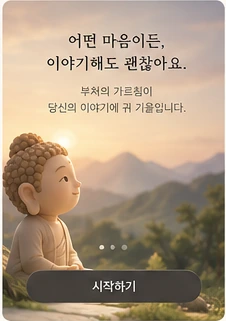

앱을 처음 여는 순간부터 첫 글자를 쓰기까지의 화면이다. 앱인토스는 진입 직후 전면을 막는 시트를 금지하고, 통합 개발 계획은 첫 화면에서 바로 고민을 쓰게 하라고 못 박았다. 그래서 안내는 시트가 아니라 화면 안 카드 한 장으로만 둔다.
1 스플래시 · 1초 미만 선택
토스가 그리는 영역
부처의 말
지금, 당신의 마음에 조용히 답합니다
에셋의 스플래시 이미지에는 제목·부제·하단 문구가 픽셀로 박혀 있어서, 글자가 없는 나무 아래 구간(원본 y 235~476)만 잘라 쓰고 로고 마크와 문구는 전부 HTML 글자로 다시 올렸다. 선택으로 표시한 이유: 토스 미니앱은 번들이 작아 첫 그림이 1초 안에 뜬다. 브랜드를 각인시키는 값어치와 1초를 버리는 값어치를 재 보고 넣을지 정한다. 넣더라도 최대 800ms 안에 홈으로 넘어가고, 탭이나 스와이프로 건너뛸 수 있어야 한다.
2 첫 진입 · 안내 카드가 열린 홈
토스가 그리는 영역
부처의 말 · AI 가 경전을 찾아 풀어 드려요

어떤 마음이든 이야기해도 괜찮아요
AI 가 부처의 가르침을 근거로 답해요
이 안내는 처음 한 번만 보여요
무슨 일이 있었나요? 편하게 이야기해 주세요
자세히 이야기할수록 더 깊이 풀어 드릴 수 있어요
오늘 있었던 일, 요즘 드는 생각, 무엇이든 좋아요
조금 더 들려주면 더 잘 풀어 드릴 수 있어요
이름·연락처 같은 정보는 적지 않아도 괜찮아요
안내를 바텀시트로 띄우면 심사에서 막힌다. 그래서 화면 안 카드로 내리고, 닫기(×)를 누르면 다시 나오지 않는다. 카드가 있어도 입력창은 그 자리에 있어서 안내를 읽지 않고 바로 쓸 수 있다. 부처 그림은 온보딩 에셋에서 글자가 없는 구간만 정사각으로 잘라 64px 로 줄여 썼다(줄여 쓰는 것이라 흐려지지 않는다).
3 안내를 닫은 뒤 · 두 번째 방문부터의 홈
토스가 그리는 영역
부처의 말 · AI 가 경전을 찾아 풀어 드려요
무슨 일이 있었나요? 편하게 이야기해 주세요
자세히 이야기할수록 더 깊이 풀어 드릴 수 있어요
오늘 있었던 일, 요즘 드는 생각, 무엇이든 좋아요
조금 더 들려주면 더 잘 풀어 드릴 수 있어요
이름·연락처 같은 정보는 적지 않아도 괜찮아요
카드가 빠진 자리를 다른 것으로 메우지 않는다. 제목이 위로 올라오고 입력창이 한 단 커져서, 이 화면이 「고민을 쓰는 곳」 하나라는 것이 더 분명해진다. 서비스 한 줄이 AI 가 답한다는 사전 고지를 상시로 맡고 있어서, 안내 카드가 사라져도 고지가 비지 않는다.
4 온보딩 3장 넘기기 비채택 · 참고
토스가 그리는 영역
어떤 마음이든 이야기해도 괜찮아요
부처의 가르침이 당신의 이야기에 귀 기울입니다
토스가 그리는 영역
경전을 찾아 오늘의 말로 풀어요
답은 AI 가 쓰지만, 근거가 되는 경전은 검증된 원문에서만 가져와요
토스가 그리는 영역
오늘 해볼 수 있는 일까지 알려 드려요
위로로 끝내지 않고, 지금 할 수 있는 작은 일을 함께 정리해요
비채택: 첫 입력까지의 거리를 늘린다. 고민을 쓰러 온 사람을 세 번 스와이프시키고 나서야 입력창을 보여주는 구조라, 가장 마음이 급한 사람이 가장 오래 기다린다. 세 장이 말하는 내용도 홈 화면이 이미 다 하고 있다: 1번은 안내 카드 한 줄, 2번은 서비스 한 줄, 3번은 답변 화면이 직접 보여준다. 에셋에 온보딩 시안이 있어서 여기 남겨 두지만 만들지 않는다.